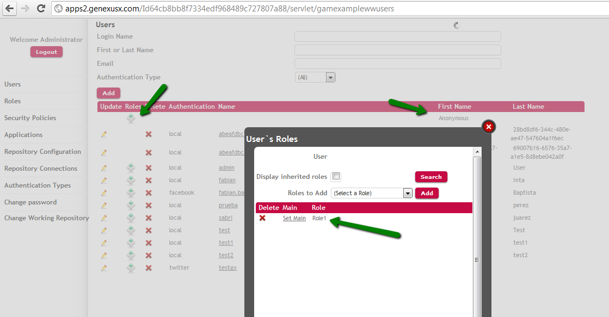

If managing GAM Permissions is desired for users registered with the Auto-register anonymous users mechanism, GAM Roles must be assigned to the "anonymous" user by applying the GAM Web Backoffice. With the gamexamplewwusers webpanel it is possible to go through the "Roles" link for the “Anonymous" user and add the role(s) to be granted to that user, as shown in the figure below.  If no role is assigned to the Anonymous user, the role-assigning criteria is the same for all users, and it will take the default Role from the repository. Role permissions are configured at the GAM Web Backoffice (see HowTo: Adding a Permission to a Role). This allows for restricting what these anonymous users may execute in the smart device application.
|
| Backlinks |
| Auto-Register Anonymous Users |